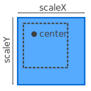

Initializes a new instance of the ScalingTransform class.
The horizontal scaling factor.
The vertical scaling factor.
The center from which the scaling is calculated.
Gets or sets the center from which the scaling is calculated.
Gets or sets the horizontal scaling factor.
Gets or sets the vertical scaling factor.
Returns the identity transform.
Returns the transformation that is defined by the specified description.
A transformation description.
Returns the scaling transform that is defined by the specified description.
A scaling transform description.
Generated using TypeDoc
Scales an object in horizontal and vertical direction.
